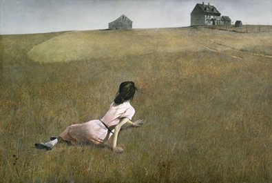

The high horizon gives the dry field most of the frame. Christina sits low left; the farmhouse sits high right. Diagonal grass marks connect them, turning “home” into an effort rather than a destination.
Straw, umber and blue-gray build a muted earth system. The faded rose shirt becomes a small warm anchor against the yellow-green field.
Tempera’s dry precision makes the foreground grass tactile while flattening the distant buildings into calm shapes. Broad, almost shadowless light makes the silence believable.
The model was based on Wyeth’s neighbor Anna Christina Olson. His wife suggested the title, shifting the work from portrait toward psychological landscape: it leaves us with a posture of reaching toward the everyday.
Source: MoMA collection. Local image is a low-resolution Fair use reference from the English Wikipedia file page, not an authorized original. Copyright belongs to Andrew Wyeth / Artists Rights Society and relevant rights holders. Original analysis and layout.